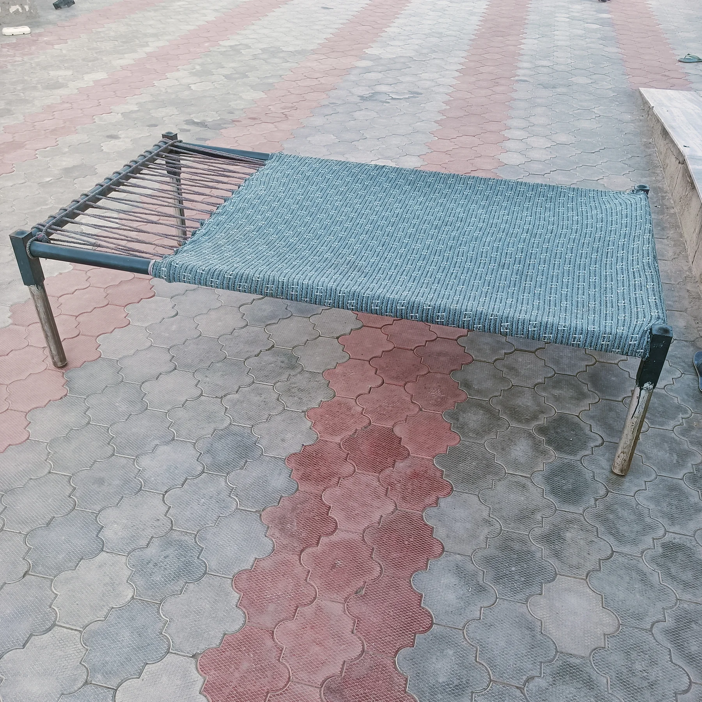

OBJECT ARCHIVE · ਵਿਰਾਸਤੀ ਵਸਤੂ

An object shaped by everyday knowledge.
The manja has been part of domestic and social life in many Punjabi homes and courtyards. Rope patterns, frames and local names can vary. It often served as a shared place for conversation, rest and everyday community life.
ਮੰਜਾ ਪੰਜਾਬ ਦੇ ਕਈ ਘਰਾਂ ਅਤੇ ਵਿਹੜਿਆਂ ਦੇ ਘਰੇਲੂ ਤੇ ਸਮਾਜਿਕ ਜੀਵਨ ਦਾ ਹਿੱਸਾ ਰਿਹਾ ਹੈ। ਇਸ ਦੀ ਬੁਣਾਈ, ਢਾਂਚਾ ਅਤੇ ਸਥਾਨਕ ਨਾਂ ਵੱਖ ਹੋ ਸਕਦੇ ਹਨ। ਇਹ ਗੱਲਬਾਤ, ਆਰਾਮ ਅਤੇ ਰੋਜ਼ਾਨਾ ਮਿਲਣ-ਜੁਲਣ ਦੀ ਸਾਂਝੀ ਥਾਂ ਵੀ ਹੁੰਦਾ ਸੀ।
Materials and making
Wooden frame and woven rope or cord. Materials and construction may differ by locality and period; this description should be matched to a dated, photographed example before being treated as a complete technical specification.
ਲੱਕੜ ਦਾ ਢਾਂਚਾ ਅਤੇ ਬੁਣੀ ਹੋਈ ਰੱਸੀ ਜਾਂ ਸੂਤ। ਸਮੱਗਰੀ ਅਤੇ ਬਣਤਰ ਇਲਾਕੇ ਤੇ ਸਮੇਂ ਅਨੁਸਾਰ ਬਦਲ ਸਕਦੀ ਹੈ। ਪੂਰੀ ਤਕਨੀਕੀ ਜਾਣਕਾਰੀ ਮੰਨਣ ਤੋਂ ਪਹਿਲਾਂ ਮਿਤੀ ਵਾਲੀ ਅਸਲ ਤਸਵੀਰ ਅਤੇ ਸਥਾਨਕ ਉਦਾਹਰਨ ਨਾਲ ਇਸ ਦੀ ਪੁਸ਼ਟੀ ਕਰਨੀ ਚਾਹੀਦੀ ਹੈ।
Traditional use
Seating, resting and sleeping.
ਬੈਠਣਾ, ਆਰਾਮ ਕਰਨਾ ਅਤੇ ਸੌਣਾ।
ਰਿਕਾਰਡ ਦੀ ਸਥਿਤੀ: ਇਸ ਵਸਤੂ ਦੇ ਇਲਾਕਾਈ ਨਾਂ, ਪਰਿਵਾਰਕ ਯਾਦਾਂ ਅਤੇ ਅਸਲ ਸਰੋਤ ਬਾਰੇ ਹੋਰ ਜਾਣਕਾਰੀ ਇਕੱਠੀ ਕੀਤੀ ਜਾਣੀ ਬਾਕੀ ਹੈ।